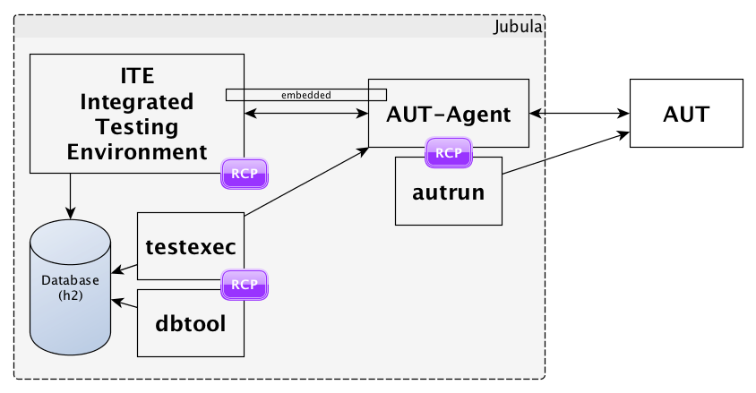
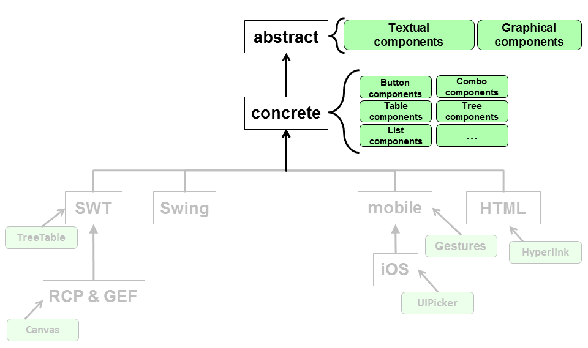
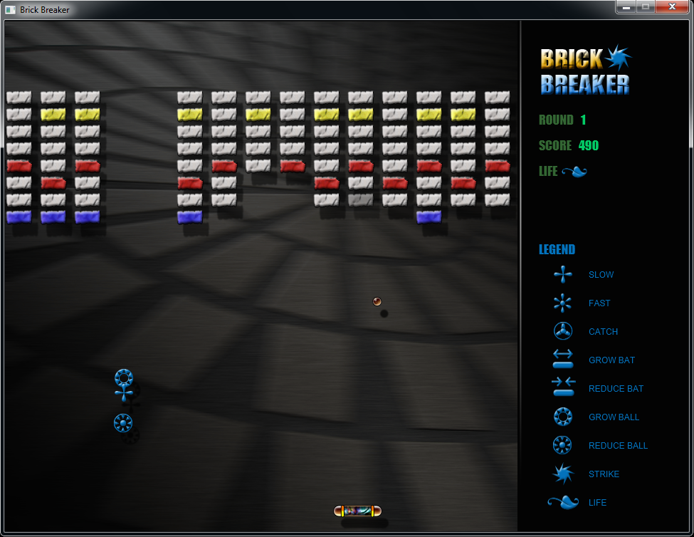
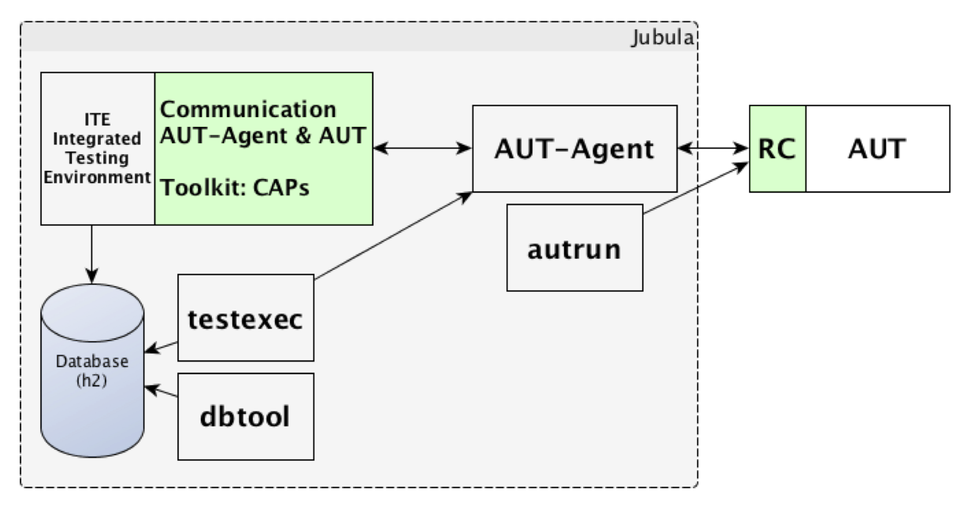
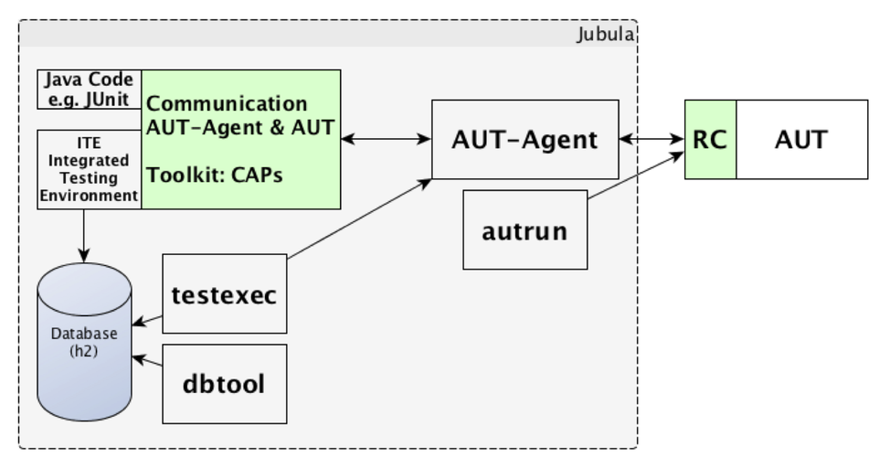
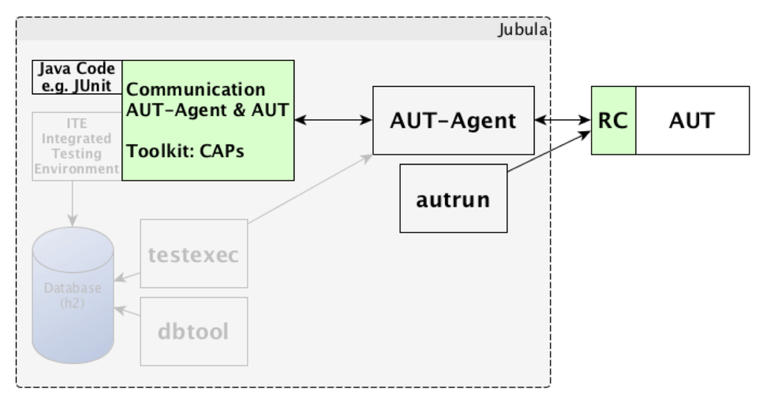
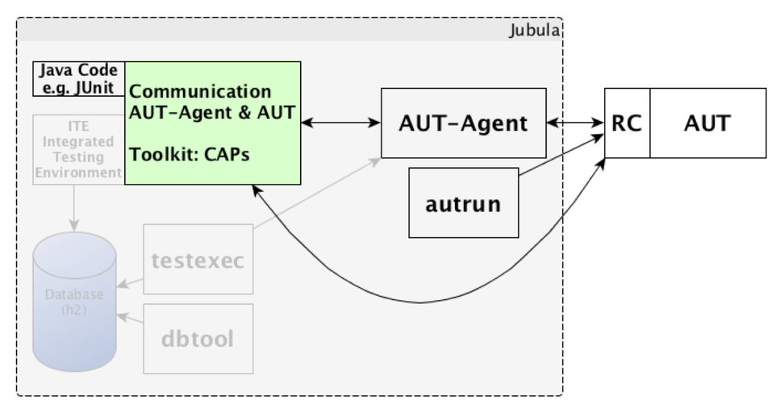

J2J
JavaFX testing with Jubula
by @MarkusTiede - BREDEX GmbH
Agenda
What's Jubula?
The concepts...
What's working?
Having some fun...
Some insights...
Getting started...
What's Jubula?
@eclipse.org/jubula since 2011
automated functional GUI testing
Code-free keyword-based black-box approach
human-readable test steps + robust UI widget recognition
Jubula - the big picture
AUT: Application under Test
The concept: toolkits

The concept: toolkit abstraction

The concept: toolkit abstraction
The concept: toolkit abstraction

The concept: toolkit abstraction

The concept: object mapping
The concept: object mapping

The concept: object mapping

The concept: object mapping
The concept: AUT start
Demo: Simple Adder
What's working?
JavaFX on Java 8
Standalone and e(fx)clipse based AUTs
Supported wigdets: Accordion, Button, ButtonBase, CheckBox, ChoiceBox, ComboBox, Hyperlink, ImageView, Label, ListView, MenuButton, PasswordField, RadioButton, Stage, TableView, TabPane, Text, TextInputControl, TitledPane, TextArea, TextField, TreeView, TreeTableView, ToggleButton
current status: http://www.eclip.se/421595
Supporting custom components
(1) write extension for ITE: o.e.jubula.toolkit.common.toolkitsupport
information about type-system and supported CAPs
Supporting custom components
(2) provide fragments for RC bundles in AUT-Agent
provide toolkit dependent technical realization
Let's have some fun...
- show 3 high-level tests using only 4 test steps (out of 270+)
- store
- wait
- compare
- move
- demonstrate strength in object recognition
- reliability
- speed
... and break sth!
official Oracle JavaFX example application
Some insights...
no modifications in AUT necessary
but to improve object heursitic in JavaFX use:
/**
* The id of this {@code Node}. This simple string
* identifier is useful for finding a specific Node
* within the scene graph ...
*/
void javafx.scene.Node.setId(String value)Additional info / getting started?
Get the latest version of Jubula!
Recommended: Eclipse for Testers Mars M3 - Friday, November 14
Eclipse Magazin - 5.2014 - Jubula goes JavaFX
First steps: Help → Cheat Sheets...
A sneak peek...
A sneak peek... to an API
A sneak peek... to an API
A sneak peek... to an API
A sneak peek... to an API
A sneak peek... to an API

Q&A...!?
Twitter: @MarkusTiedeMarkus.Tiede@bredex.de
Copyright BREDEX GmbH 2014. Made available under the Eclipse Public License v1.0.